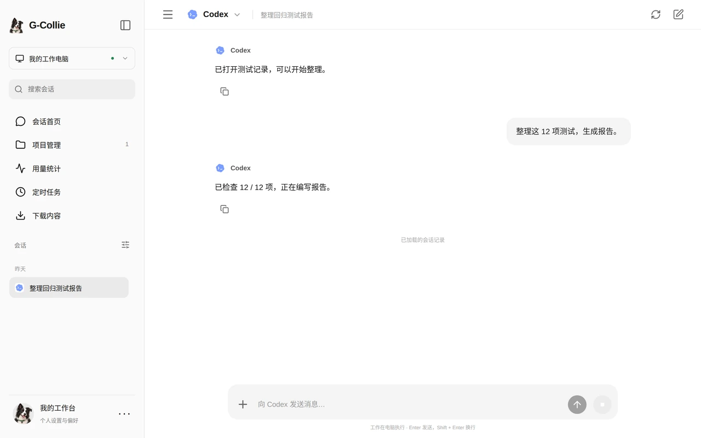
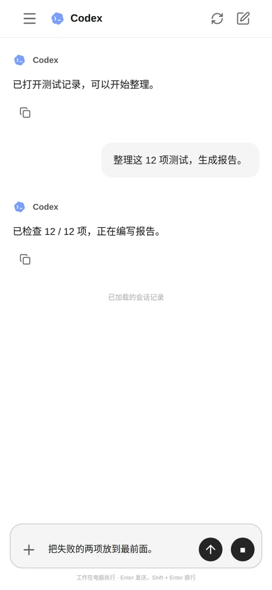
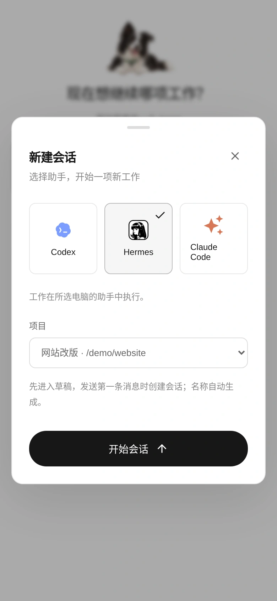

跳到主要内容
G-Collie
Agent 会话控制台
首次连接
GitHub
↗
帮你照看
每一个
Agent
在手机或浏览器上查看进度，在支持的会话里接着发消息，也可以新建会话。任务在你的电脑上执行。
下载 Linux 电脑端
DEB · amd64 · 0.3.35
下载 Android 手机端
APK · arm64 · 0.1.51



选择演示场景
继续已有会话
手机新建会话
接入你正在用的助手
Codex
Hermes
Claude Code
查看能力矩阵
↗
连接你的第一台电脑
在电脑上启动服务
加入同一私网，用配对码连接
打开原会话，或新建会话
首次连接指南
→
电脑端指南
↗
手机端指南
↗
 Codex
Codex Hermes
Hermes